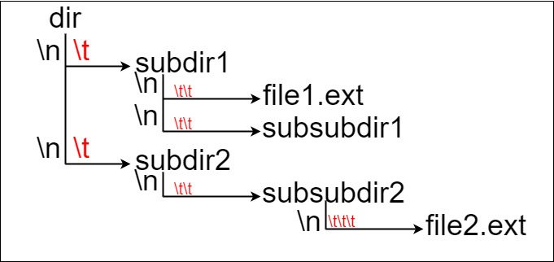

2 Setting File Paths and Understanding the Current Working Directory
2.1 Learning Objectives
By the end of this lesson, students should be able to:
Check Your current working directory in Python.
Use relative and absolute paths correctly.
Read files using proper path specification.
Fix the common file path errors in VS Code.
Generate HTML from your notebook
2.2 What is the Current Working Directory?
In Python, the current working directory (CWD) is the folder your code is running from.
When you use a relative path, it’s relative to this directory.
In python, the os module allow you to interact with the OS and the filesystem. We need to import it before using it
Code
import os
print(os.getcwd())c:\Users\lsi8012\workspace\Intro_to_programming_for_data_sci_wi25This tells you where Python is currently looking for files by default.
2.3 Abosolute vs. Relative Paths
2.3.1 Absolute Path
- Full path from the root of the file system.
Code
path = "/Users/lizhen/Desktop/data/myfile.csv"2.3.2 Relative Path
- Path relative to the current working directory.
Code
path = "data/myfile.csv" # if your CWD is the parent folder of "data"In your code, it’s highly recommended using relative paths whenever possible for better portability!
2.3.3 Let’s Try: Reading a Data File
Suppose your directory looks like this:

In lecture.ipynb, you can do:
Code
import json
with open("Datasets/filtered_movies.json", encoding="utf8") as file:
movie_data=json.load(file)
movie_data[:2][{'Title': '12 Rounds',
'US Gross': 12234694,
'Worldwide Gross': 18184083,
'US DVD Sales': 8283859,
'Production Budget': 20000000,
'Release Date': 'Mar 27 2009',
'MPAA Rating': 'PG-13',
'Running Time min': 108,
'Distributor': '20th Century Fox',
'Source': 'Original Screenplay',
'Major Genre': 'Action',
'Creative Type': 'Contemporary Fiction',
'Director': 'Renny Harlin',
'Rotten Tomatoes Rating': 28,
'IMDB Rating': 5.4,
'IMDB Votes': 8914},
{'Title': 2012,
'US Gross': 166112167,
'Worldwide Gross': 766812167,
'US DVD Sales': 50736023,
'Production Budget': 200000000,
'Release Date': 'Nov 13 2009',
'MPAA Rating': 'PG-13',
'Running Time min': 158,
'Distributor': 'Sony Pictures',
'Source': 'Original Screenplay',
'Major Genre': 'Action',
'Creative Type': 'Science Fiction',
'Director': 'Roland Emmerich',
'Rotten Tomatoes Rating': 39,
'IMDB Rating': 6.2,
'IMDB Votes': 396}]If you run into a FileNotFoundError, it means your file path is not specified correctly and the program is unable to locate the file.

2.3.4 Practice Exercise
What if your file directionary look like this:

You are now working in lecture2.ipynb. How should you specify the file path so that the data in the JSON file can be read properly into your program?
2.4 Specifying Your File Path
We will discuss how to specify file paths in Python for loading and saving data, with an emphasis on absolute and relative paths. File paths are crucial when working with files in Python, such as reading datasets and writing results to files.
2.4.1 Methods to Specify file path in Windows
Windows uses backslashes (\) to separate directories in file paths. However, in Python, the backslash is an escape character, so you need to either: * Escape backslashes by using a double backslash (\\), or * Use raw strings by prefixing the path with r.
2.4.1.1 Method 1: Using escaped backslashes
Code
file_path = "C:\\Users\\Username\\Documents\\data.csv"2.4.1.2 Method 2: Using Raw Strings
Code
file_path = r"C:\Users\Username\Documents\data.csv"2.4.1.3 Method 3: Using forward slashes (/)
Code
file_path = "C:/Users/Username/Documents/data.csv"2.4.1.4 Method 4: Using os.path.join
Code
import os
file_path = os.path.join("C:", "Users", "Username", "Documents", "data.csv")This method works across different operating systems because os.path.join automatically uses the correct path separator (\ for Windows and /for Linux/Mac).
macOS does not have the same issue as Windows when specifying file paths because macOS (like Linux) uses forward slashes (/) as the path separator, which is consistent with Python’s expectations.
2.4.1.5 Best Practices for File Paths in Data Science
- Use relative paths when working in a project structure, as it allows the project to be portable.
- Use absolute paths when working with external or shared files that aren’t part of your project.
- Check the current working directory to ensure you are referencing files correctly.
- Avoid hardcoding file paths directly in the code to make your code reusable on different machines.
- Use the forward slash (
/) as a path separator oros.path.jointo specify file path if your code will work across different operating systems
2.6 Independent Study
To reinforce the skills learned in this lecture, complete the following tasks:
- Set Up Your Workspace
- Create a folder named
STAT201for putting the course materials. - Create a python environment for the upcoming coursework.
- Organize your files by creating separate directories for datasets, assignments, quizzes, lectures, and exams.
- Set up these directories in your file system to keep your work structured and easy to navigate.
- Create a folder named
- Create your first notebook for quiz and generate html for your submission
- Create a new notebook named
quiz1.ipynbinside thelecturefolder.
- Add a heading to the top of the notebook:
# First HTML file
- In a code cell, print the message:
Today is day 1 of my programming course.
- In another code cell, compute and print the number of seconds in a day (i.e., 24 × 60 × 60).
- Use Quarto to convert the notebook to an HTML file.
- Create a new notebook named
The HTML file should look like the picture below.

By completing these exercises, you’ll gain practical experience with file paths, generating HTML from notebooks using Quarto, and interacting with the filesystem in Jupyter notebooks. This will prepare you for Python programming starting next week.